Suboptimal data contains aligned and misaligned features.
Simulated pushing may share the same high-level strategy but differ in contact dynamics. A wrong-task pick-and-place dataset may share useful grasping primitives but encode the wrong goal.
Large robot datasets mix expert demonstrations with failures, simulation, other embodiments, task mismatch, and play data. Filtering throws away useful signal. Naive co-training learns the useful and harmful parts together.
Ambient Diffusion Policy asks a more granular question: at which diffusion times does a suboptimal sample agree with the target data?
Each step maps directly to a robotics failure mode and a specific part of the diffusion process.
admit(q_i, t) = t <= t_max_i or t >= t_min_i
Simulated pushing may share the same high-level strategy but differ in contact dynamics. A wrong-task pick-and-place dataset may share useful grasping primitives but encode the wrong goal.
At high noise, denoisers commit to broad plans. At low noise, they refine local motions such as smoothness, grasping, and contact behavior.
High noise can mask local defects, enabling global learning from suboptimal data. Low noise can reuse local primitives when local structure is shared.
The policy trains with a custom sampler over admissible samples. At deployment, it runs exactly like a standard Diffusion Policy.
The key appendix and main-paper figures become the proof-of-intuition section of the website.

Robot action data exhibits a spectral power law. That structure induces a global-to-local hierarchy: high-noise denoisers capture global plans, while low-noise denoisers refine local action detail.
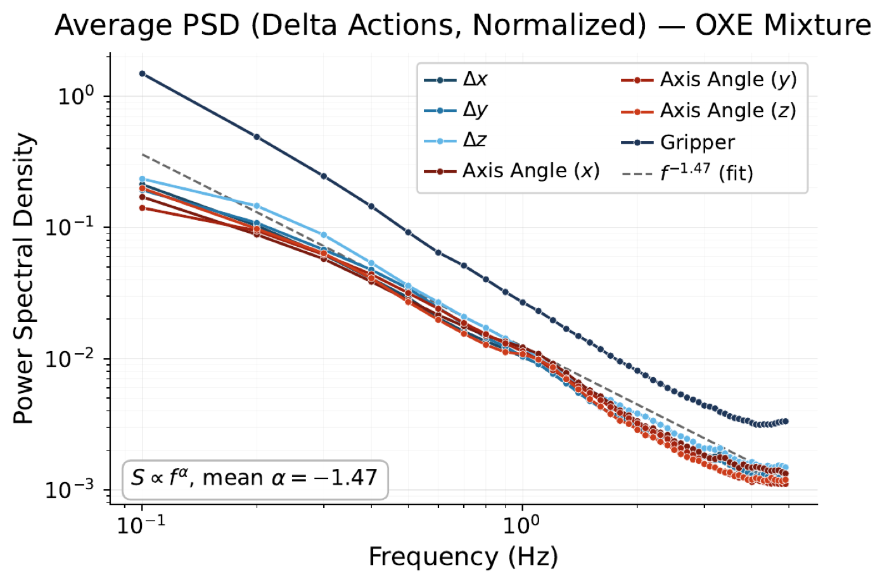
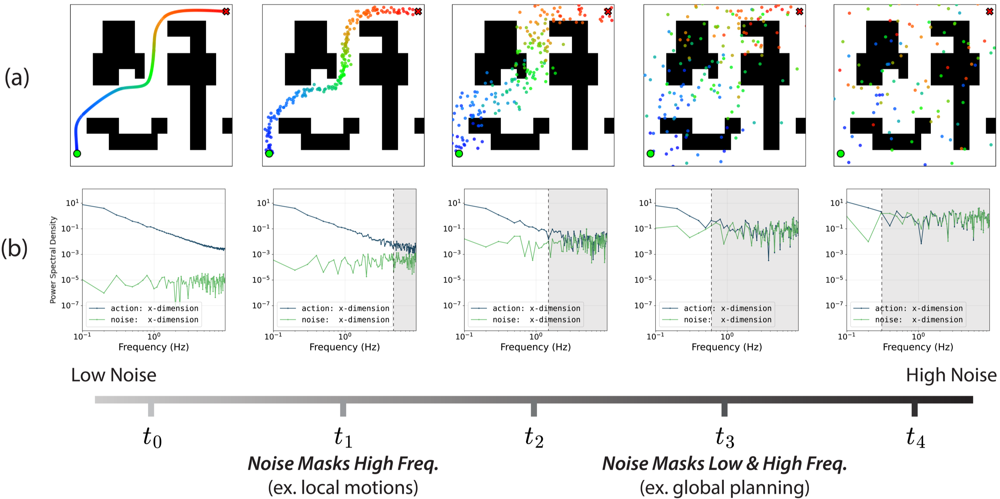
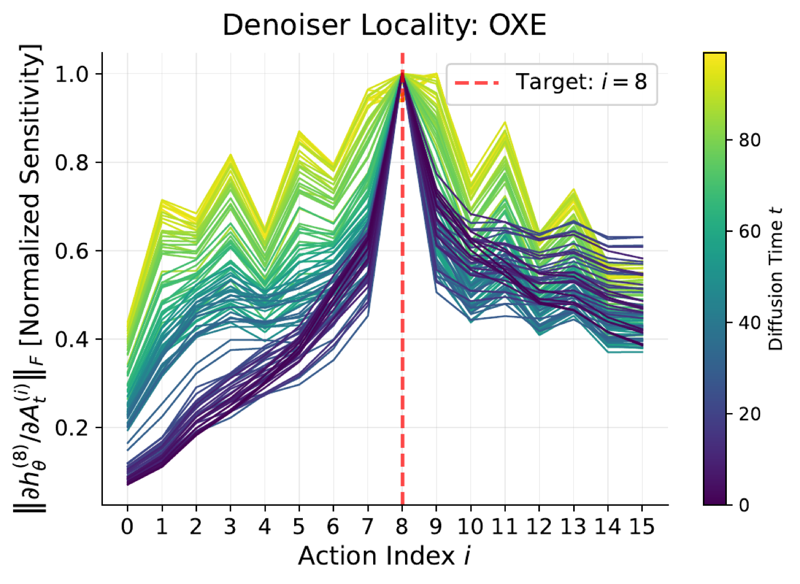
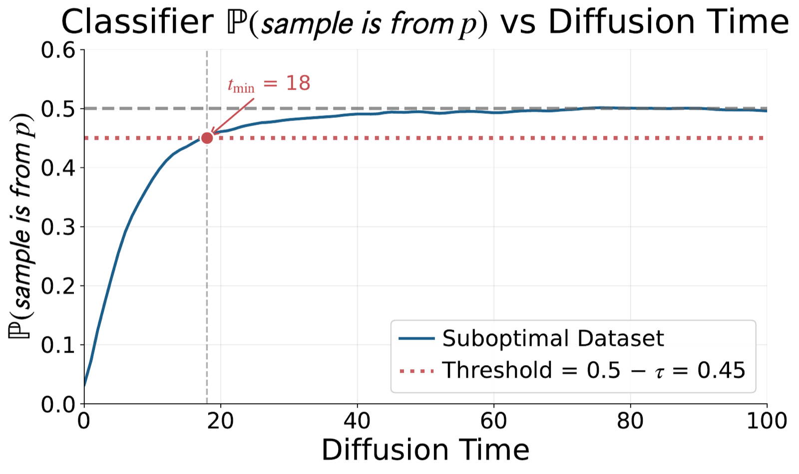
for each training step:
sample t ~ Uniform(0, T)
sample from D_p at any t
sample q_i from D_q only if:
t <= t_max_i # local
or t >= t_min_i # global
update the Diffusion Policy denoiser
inference:
run the standard Diffusion Policy samplerThe controlled experiments isolate one failure mode at a time before scaling to mixed real-world data.

With 50 high-quality GCS trajectories and 5,000 lower-quality RRT trajectories, Ambient matches co-training success while remaining roughly 2x smoother.
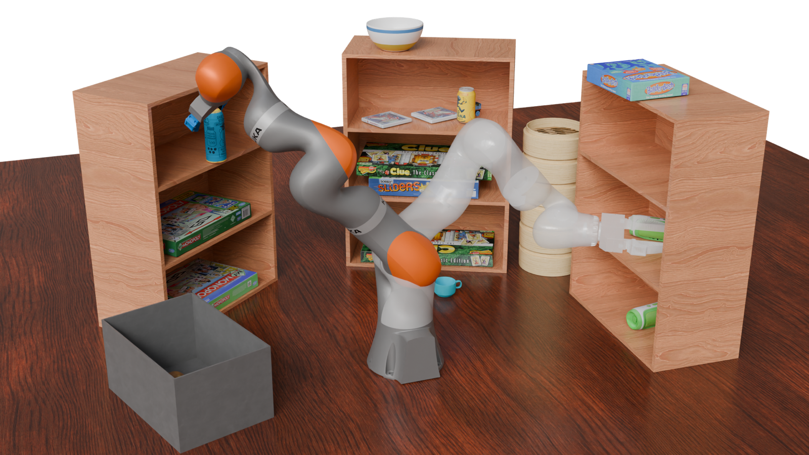
Ambient improves success over co-training while avoiding much of the high-acceleration behavior inherited from lower-quality planners.

In planar pushing, classifier-labeled Ambient variants outperform co-training; per-datapoint t_min labels perform best.

Ambient uses wrong-task demonstrations at low noise to learn motion primitives while preserving target-task logic at high noise.
OXE introduces unstructured mixtures: different embodiments, tasks, controllers, frequencies, teleoperation methods, and quality levels.
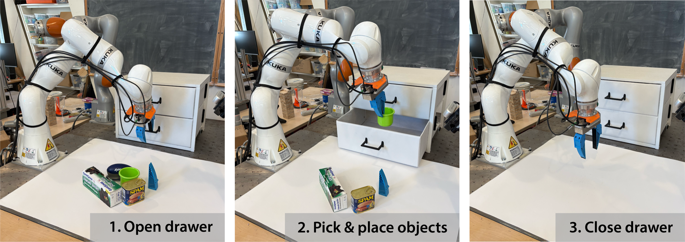
With 50 in-distribution demos, co-training adds only a small gain over filtering. Ambient improves by up to 15% and benefits from scaling OXE.
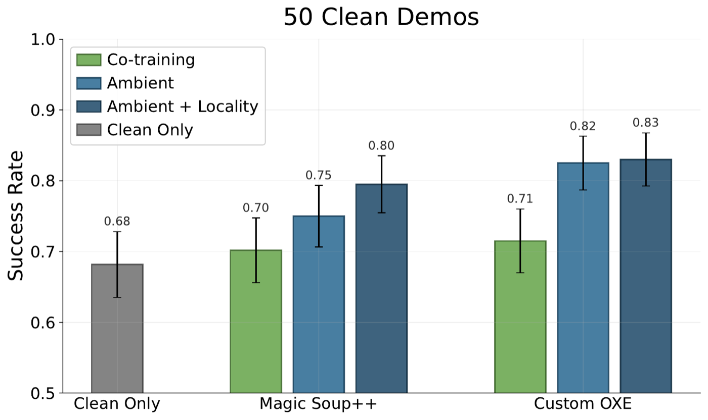
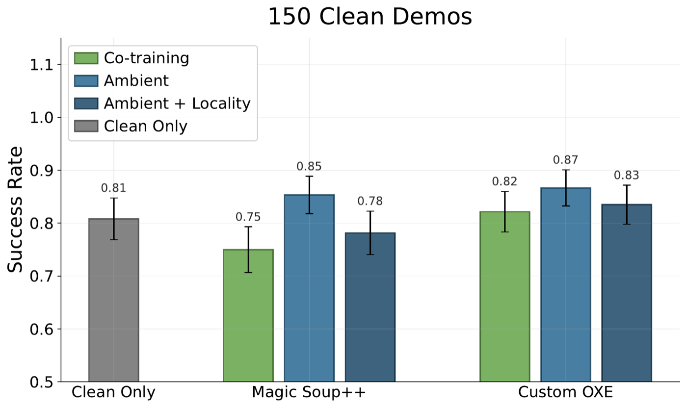
The tower task stresses precision because placement errors compound. Ambient builds up to 33% taller towers than co-training.
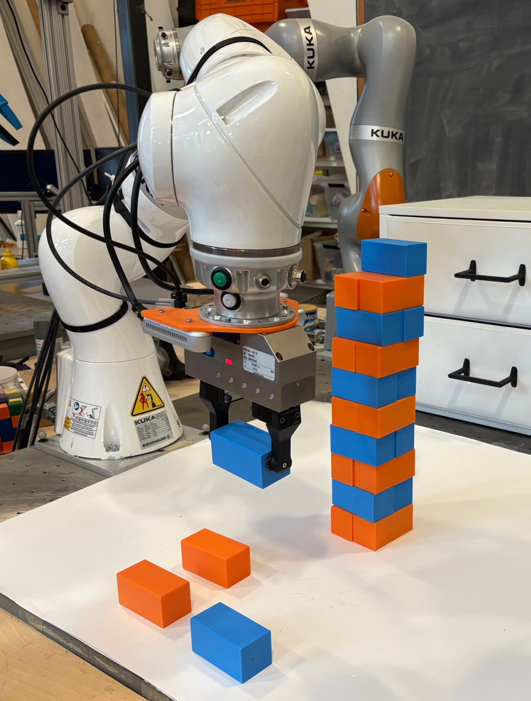

Hardware videos are long by nature, so each card includes 1x, 2x, and 3x playback controls.
Successful trial on unseen objects.
Representative failure mode from using suboptimal data too broadly.
Alternating color and direction blocks on hardware.
Baseline comparison under the same task family.
These details are too important to bury: they explain where Ambient is practical and where the open questions remain.
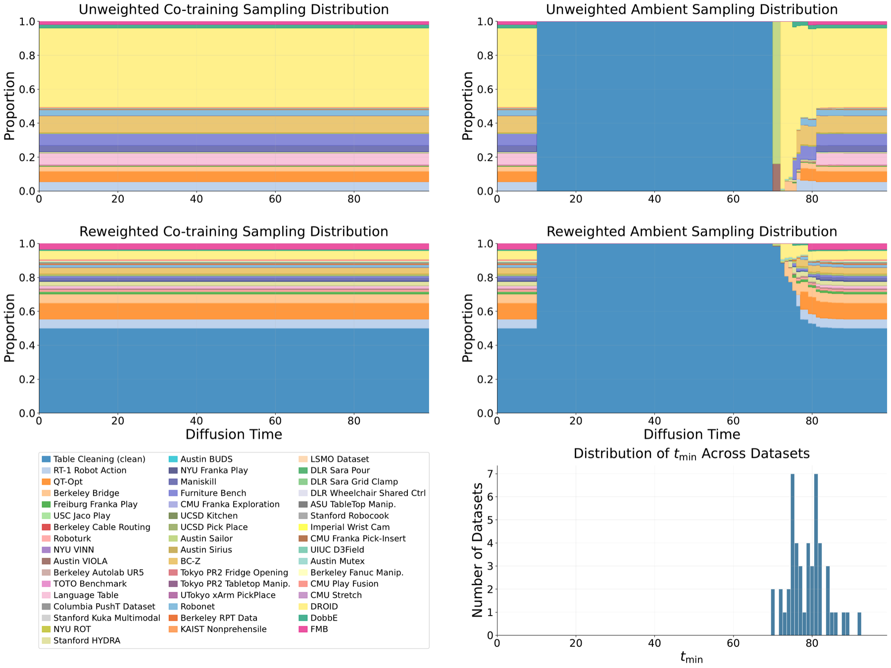
Co-training uses every dataset at every diffusion time. Ambient changes the admissible set over time, creating the characteristic middle region where only target data is used.
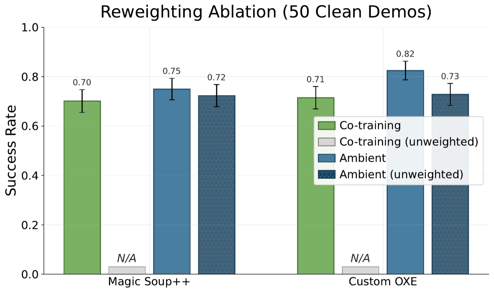
Because D_q is only used when it is aligned, Ambient is less sensitive to exact mixture weights than co-training.
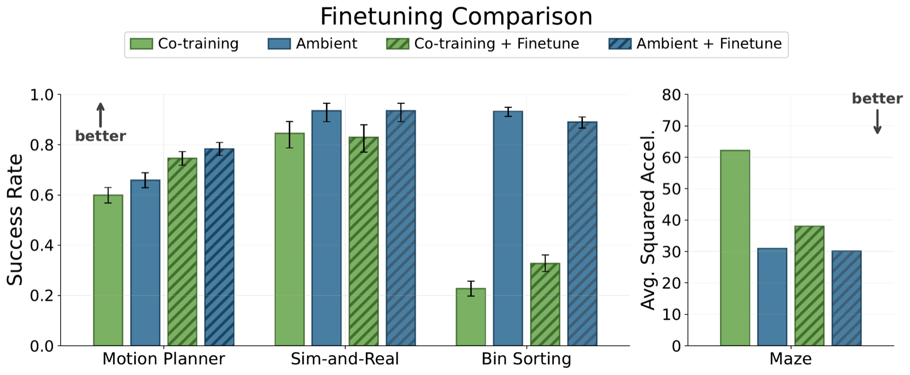
Finetuning an Ambient base is stronger than finetuning a co-trained base, and an Ambient base can outperform a finetuned co-trained model when target data is scarce.
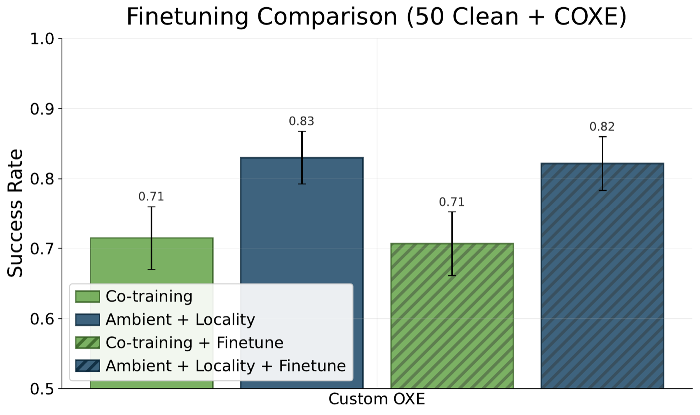
On table cleaning, finetuning the best policies did not produce a statistically significant improvement in the current experiments.
We propose Ambient Diffusion Policy, a simple and principled method for imitation learning from suboptimal data in robotics. High-quality, task-specific robot data is expensive and time-consuming to collect, while suboptimal datasets with lower-quality or out-of-distribution demonstrations are abundant. Existing methods that co-train on both data sources in robotics often fail to separate the meaningful and the harmful features in suboptimal samples. In contrast, our method attempts to extract only the useful learning signal by introducing a new axis to co-training in robotics: noise-dependent data usage. Ambient Diffusion Policy restricts the contribution of suboptimal data during training to only the high and low diffusion times. We observe that robot action data exhibits a spectral power law, which induces two important properties on the optimal Diffusion Policy: locality and a global-to-local hierarchy. These properties rigorously justify our algorithm. Our experiments validate Ambient Diffusion Policy on four types of suboptimal action data (noisy trajectories, sim-to-real gap, task mismatch, and large-scale data mixtures) and six tasks. The results show that it effectively learns from arbitrary sources of suboptimal data. Notably, it outperforms existing baselines by up to 33% when scaled to Open X-Embodiment—a large real-world dataset with unstructured and heterogeneous distribution shifts. Overall, Ambient Diffusion Policy increases the utility of suboptimal demonstrations and expands the set of usable data sources in robotics.